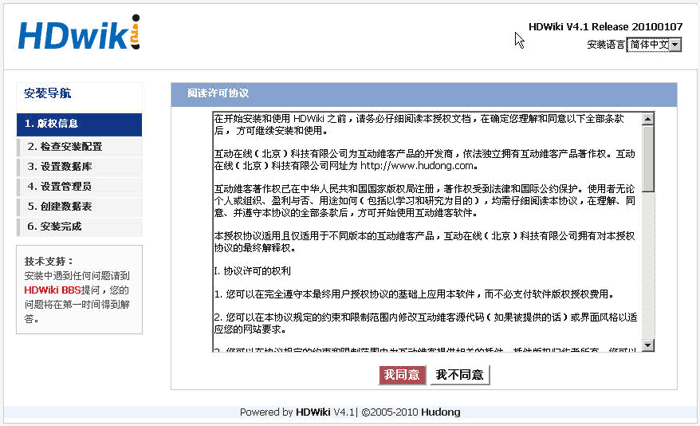
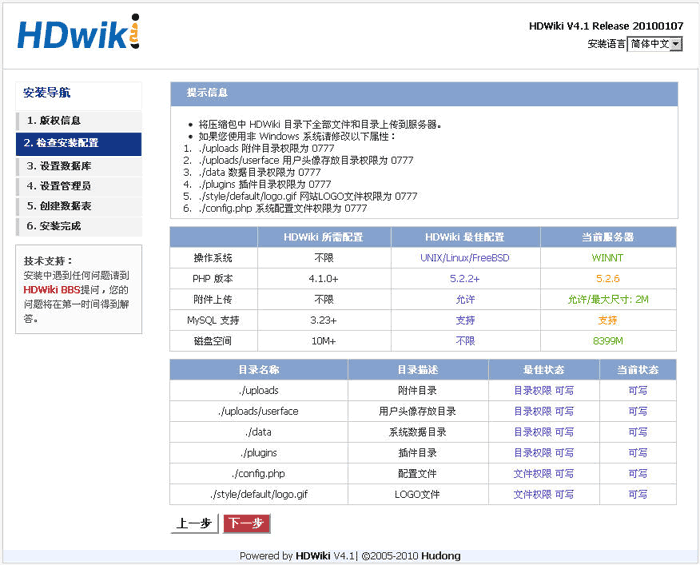
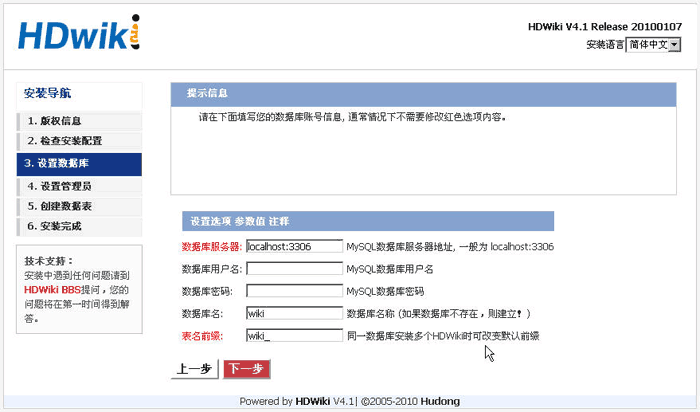
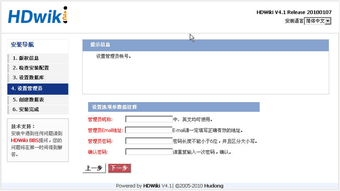
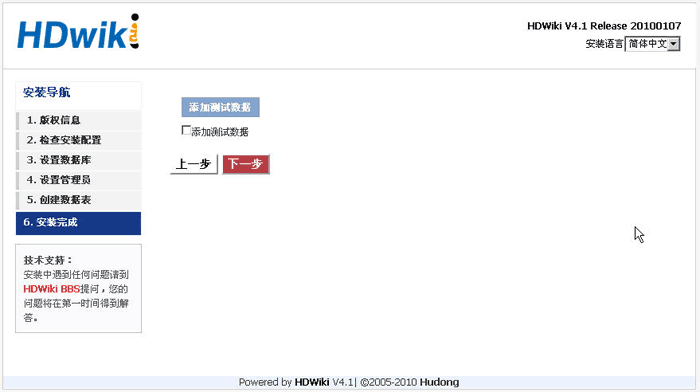
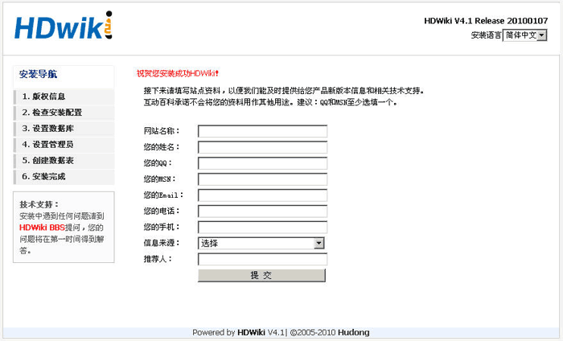

版本4.1
强大易用的WIKI 建站系统
互动维客欢迎您使用HDWiki系统。互动维客开源系统（HDWiki）作为中国第一家拥有自主知识产权的中文WIKI 系统，由互动在线（北京）科技有限公司（www.hudong.com）于2006年11月28日正式推出，力争为给国内外众多的中小站长和WIKI 爱好者提供一个开源、免费、易用、功能强大的WIKI 系统。感谢您选择它互动我们的世界，WIKI你的生活。
— 互动维客开源
一、系统推荐：
安装互动维客，你的服务器（或者虚拟主机）必须满足以下条件：
二、安装步骤：
A、推荐您下载使用UTF-8版本的HDWiki，GBK版本不支持多语言文字和某些特殊符号。
将下载的压缩包解压，其中有三个文件夹，document文件夹里是安装升级说明文档。upgrade文件夹是升级程序，这两个文件夹不要上传。请将hdwiki文件夹下的所有文件上传到你的服务器（或虚拟主机）的根目录或者您自建的wiki目录中。
保证下列文件或目录可读写(Unix和Linux服务器请设置以下文件夹的属性为777）：
B、上传完毕后，开始在浏览器中安装 HDWiki ，比如你要安装 HDWiki 的访问地址为：http://www.yourwebsite.com/wiki ，那么在浏览器地址栏应该填写为：http://www.yourwebsite.com/wiki，输入完之后则显示 HDWiki 的安装页面，如下图所示：
C、安装时系统会自动检查安装配置，如果配置不对，将不能进入下一步。
注：安装如果出现错误，请检查您的服务器（或者虚拟主机）PHP是否支持GD库，或者文件夹的属性设置是否有误，并重试。如果还是不成功，请访问HDWiki网站，并向我们提供您能收集到的尽可能多的数据信息，以方便我们尽快解决问题。
（1）安装协议

（2）检查安装设置

（3）设置数据库

（4）设置管理员

（4.1）数据库重名会提示数据库中已经安装过 HDWiki, 继续安装会清空原有数据。

（4.2）如果您坚持点击下一步则会提示：继续安装会清空全部原有数据，您确定要继续吗?

（5）创建数据库表

（6.1）完成安装--添加测试数据

（6.2）完成安装--提交站长信息

恭喜您，安装成功！
如果您有在本文中未提及的问题，请充分利用好 HDWiki的在线资源:
在开始安装和使用 HDWiki 之前，请务必仔细阅读本授权文档，在确定您理解和同意以下全部条款后， 方可继续安装和使用。
互动在线（北京）科技有限公司为互动维客产品的开发商，依法独立拥有互动维客产品著作权。互动在线（北京）科技有限公司网址为 http://www.hudong.com。
互动维客著作权已在中华人民共和国国家版权局注册，著作权受到法律和国际公约保护。使用者无论个人或组织、盈利与否、用途如何（包括以学习和研究为目的），均需仔细阅读本协议，在理解、同意、并遵守本协议的全部条款后，方可开始使用互动维客软件。
本授权协议适用且仅适用于不同版本的互动维客产品，互动在线（北京）科技有限公司拥有对本授权协议的最终解释权。
有关互动维客最终用户授权协议、授权与技术服务的详细内容，均由互动维客官方网站独家提供。互动在线（北京）科技有限公司拥有在不事先通知的情况下，修改授权协议和技术服务价目表的权力，修改后的协议或价目表对自改变之日起的新授权用户生效。
电子文本形式的授权协议如同双方书面签署的协议一样，具有完全的和等同的法律效力。您一旦开始安装互动维客，即被视为完全理解并接受本协议的各项条款，在享有上述条款授予的权力的同时，受到相关的约束和限制。协议许可范围以外的行为，将直接违反本授权协议并构成侵权，我们有权随时终止授权，责令停止损害，并保留追究相关责任的权力。